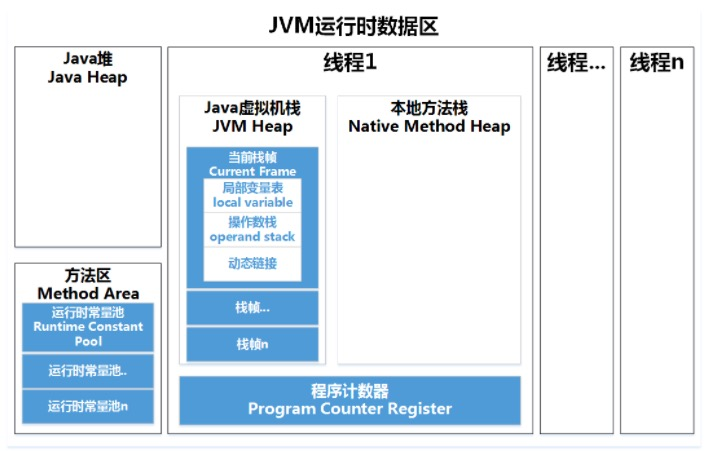
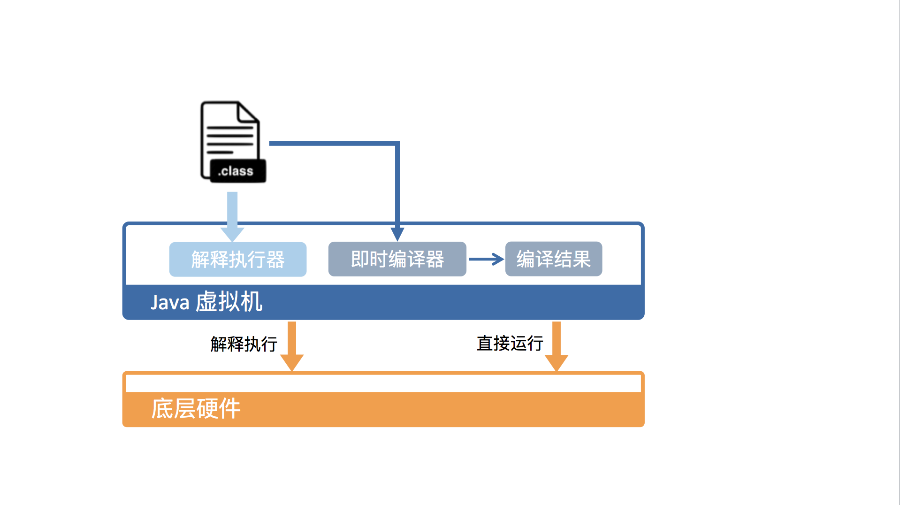
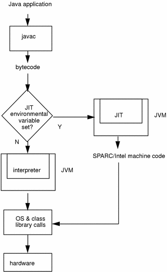

如果你是一名 Java 开发人员，你肯定指定 Java 代码有很多种不同的运行方式。比如说可以在开发工具（IDEA、Eclipse等）中运行，可以双击执行 jar 文件运行，也可以在命令行中运行，甚至可以在网页（比如各种 OJ）中运行。当然，这些执行方式都离不开 JRE（Java 运行时环境）。
JRE 包含运行 Java 程序的必需组件，包括 JVM（Java 虚拟机）以及 Java 核心类库等。Java 程序员经常接触到的 JDK（Java 开发工具包）同样包含了 JRE，并且还附带了一系列开发、诊断工具。
本篇文章主要针对以下两个问题和大家一起探讨：
Java 的一个非常重要的特点就是与平台的无关性，而使用 JVM 是实现这一特点的关键。Java 作为一门高级程序语言，语法复杂，抽象程度高。因此，直接在硬件上运行这种复杂的程序并不现实。所以在运行 Java 程序之前，我们需要对其进行转换。
设计一个面向 Java 语言特性的虚拟机，并通过编译器将 Java 程序转换成该虚拟机所能识别的指令序列（因为 Java 字节码指令的操作码（opcode）被固定为一个字节，故又称 Java 字节码）。
JVM 一般是在各个现有平台（如 Windows、Linux）上提供软件实现，这样可以使一旦一个程序被转换成 Java 字节码，那么便可以在不同平台上的虚拟机实现里运行（一次编写，到处运行）。
JVM 另外一个好处是带有托管环境（Managed Runtime），托管环境能够代替处理一些代码中冗长而且容易出错的部分，其中包括自动内存管理与垃圾回收（GC）。
另外，托管环境还提供了诸如数组越界、动态类型、安全权限等等的动态检测，使我们免于书写这些无关业务逻辑的代码。
JVM 具体是怎么运行 Java 字节码的呢？下面我们一起来看一下：
从 JVM 来看，执行 Java 代码首先需要将它编译而成的 class 文件加载到 JVM 中。加载后的 Java 类会被存放于方法区（Method Area）中。实际运行时，JVM 会执行方法区内的代码。
JVM 会在内存中划分出堆和栈来存储运行时数据，JVM 会将栈细分为面向 Java 方法的 Java 方法栈，面向本地方法（用 C++ 写的 native 方法）的本地方法栈，以及存放各个线程执行位置的 PC 寄存器。

在运行过程中，每当调用进入一个 Java 方法，JVM 会在当前线程的 Java 方法栈中生成一个栈帧，用以存放局部变量以及字节码的操作数。栈帧的大小是提前计算好的，而且 JVM 不要求栈帧在内存空间里连续分布。
当退出当前执行的方法时，不管是正常返回还是异常返回，JVM 均会弹出当前线程的当前栈帧，并将之舍弃。
从硬件视角来看，Java 字节码无法直接执行。因此，JVM 需要将字节码翻译成机器码。
在 HotSpot 里面，上述翻译过程有两种形式：第一种是解释执行（interpreter），即逐条将字节码翻译成机器码并执行；第二种是即时编译（Just-In-Time compilation，JIT），即将一个方法中包含的所有字节码编译成机器码后再执行。

前者的优势在于无需等待编译，而后者的优势在于实际运行速度更快。HotSpot 默认采用混合模式，综合了解释执行和即时编译两者的优点。它会先解释执行字节码，而后将其中反复执行的热点代码，以方法为单位进行即时编译。

整个 Java 代码执行过程如下：
其中，在运行过程中会被即时编译的热点代码有两类：
针对第一类，编译器会将整个方法作为编译对象，这也是标准的 JIT 编译方式。对于第二类是由循环体出发的，但是编译器依然会以整个方法作为编译对象，因为发生在方法执行过程中，称为栈上替换。
HotSpot 采用了多种技术来提升启动性能以及峰值性能，刚刚提到的即时编译便是其中最重要的技术之一。
即时编译建立在程序符合二八定律的假设上，也就是百分之二十的代码占据了百分之八十的计算资源。
对于占据大部分的不常用的代码，我们无需耗费时间将其编译成机器码，而是采取解释执行的方式运行；另一方面，对于仅占据小部分的热点代码，我们则可以将其编译成机器码，以达到理想的运行速度。
为了满足不同用户场景的需要，HotSpot 内置了多个即时编译器：C1、C2。之所以引入多个即时编译器，是为了在编译时间和生成代码的执行效率之间进行取舍。
从 Java 7 开始，HotSpot 默认采用分层编译的方式：热点方法首先会被 C1 编译，而后热点方法中的热点会进一步被 C2 编译。
为了不干扰应用的正常运行，HotSpot 的即时编译是放在额外的编译线程中进行的。HotSpot 会根据 CPU 的数量设置编译线程的数目，并且按 1:2 的比例配置给 C1 及 C2 编译器。
在计算资源充足的情况下，字节码的解释执行和即时编译可同时进行。编译完成后的机器码会在下次调用该方法时启用，以替换原本的解释执行。
其中判断一段代码是否为热点代码，是不是需要触发即时编译，这样的行为称为热点探测（Hot Spot Detection），探测算法有两种：
HotSpot 使用的是第二种-基于计数器的热点探测，并且有两类计数器：方法调用计数器（Invocation Counter）和回边计数器（Back Edge Counter）。
这篇文章主要介绍了为什么需要 JVM 以及 JVM 是怎样运行 Java 代码的。
为什么需要 JVM：
JVM 将运行时内存区域划分为五个部分，分别为方法区、堆、PC 寄存器、Java 方法栈和本地方法栈。Java 程序编译而成的 class 文件，需要先加载至方法区中，方能在 JVM 中运行。
为了提高运行效率，HotSpot 虚拟机采用的是一种混合执行的策略，会解释执行 Java 字节码，然后会将其中反复执行的热点代码，以方法为单位进行即时编译，翻译成机器码后直接运行在底层硬件之上。
HotSpot 装载了多个不同的即时编译器，以便在编译时间和生成代码的执行效率之间做取舍。
判断热点代码的探测算法包括基于采样和基于计数器两种，HotSpot 采用基于计数器的热点探测，计数器又分为方法调用计数器和回边计数器。